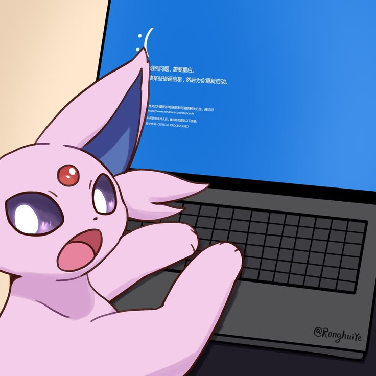

¡Más sobre mí!
Itziar Urriola
34 años | Buenos Aires


Cualidades y Habilidades
- Mentalidad analítica
- Resolución de problemas
- Trabajo en equipo
- Atención al detalle

Itziar Urriola
34 años | Buenos Aires